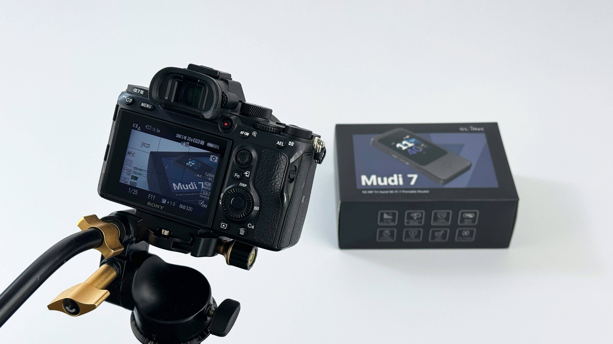
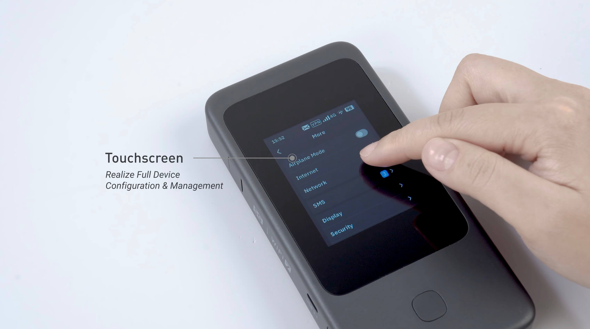
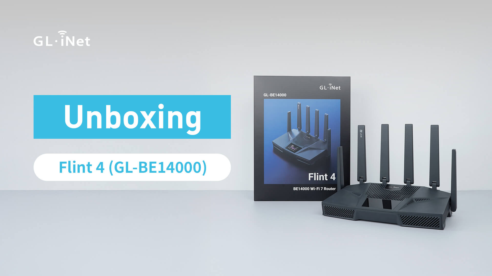

Unboxing Video
Product introduction videos created to showcase new tech hardware, demonstrate simple setup procedures, and highlight physical features.

Overview
The unboxing video introduces the latest GL.iNet product — showcasing its appearance. As a multimedia designer, I filmed and edited these videos so customers can quickly understand what they are receiving and how to get started.
- Client
- GL.iNet
- Category
- Videography, Photography
- Tools
- Premiere
- Deliverables
- Unboxing films, custom thumbnails
- Production
- ~5 days / video
Focus
Clear product storytelling on camera — paced reveals, setup steps, and polished motion that support both marketing and customer curiosity.
Product reveal
Show the router’s form, finish, and packaging so first impressions feel premium and accurate.
Simple intro
Go through ports, touchscreen and button so viewers can follow along without a manual.
Camera craft
Mix tilt, pan, stabilized, and handheld shots for professional while keeping the product readable.
Channel-ready
Edit for YouTube, Shopify and Amazon — color adjustment and music, and a strong thumbnail that earns the click.
Storyboard & script
The marketing team produces a storyboard with the title, steps, and references for the video’s opening. That document is the shared plan before any camera rolls.
Photo & video filming
Once the storyboard is locked, filming begins. Footage is captured with a mix of techniques — tilt, pan, stabilized, and handheld — chosen to match each moment of the unboxing and setup flow.


Video editing
After filming, the best takes are selected. Color and exposure are balanced, then subtitles, background music, and transitions (dissolve, stabilizer, and other effects) are added for a polished final cut.
Thumbnail design
Each video gets a custom thumbnail: an appealing background with the product name and model, designed to stand out on YouTube and Amazon listings.

Publish
With edits and thumbnail ready, the marketing team uploaded the video. It becomes a resource for customers understand product setup — on YouTube and Amazon.
Plan
- Storyboard & script
- Shot list & references
- Opening structure
Produce
- Tilt / pan / handheld / stabilized
- Select takes
- Color & exposure
Deliver
- Subtitles & music
- Thumbnail design
- YouTube & Amazon
Outcome
Clear product introduction, ready for YouTube and Amazon, produced in about 2 days per video.